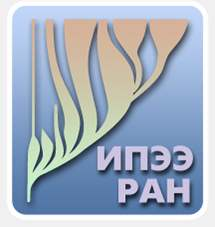

Постоянно действующая экспедиция РАН по изучению животных Красной книги Российской Федерации и других особо важных животных фауны России
| начальник Постоянно действующей экспедиции РАН | Рожнов В. В. | ||
| руководитель научной группы | Мордвинцев И. Н. |
| руководитель научной группы: | Мордвинцев И. Н. | ИПЭЭ РАН | |
| охрана научной группы, сбор биоматериалов: | Мизин И. А. | НП «Русская Арктика» | |
| иммобилизация животных, первичная обработка биоматериала: | Иванов Е. А. | ИПЭЭ РАН | |
| анализ данных: | Платонов Н. Г. | ИПЭЭ РАН |


Программа сохранения биологического разнообразия
Организатор: Роснефть
Исполнитель: Сотрудники ИПЭЭ РАН, НП «Русская Арктика». Работы Постоянно действующей экспедиции РАН по Программе изучения белого медведя российской Арктики.
Проведение судовых наблюдений за морскими млекопитающими и отдельными видами птиц для оценки биологического разнообразия, распределения и обильности кормовой базы белого медведя.
Оценка абиотических ресурсов окружающей среды
Отловы
Контроль физиологических показателей (температура тела, пульс, оксигенация)
Морфометрия, включая взвешивание
Сбор биоматериалов, в том числе и для микробиологических исследований
Долгосрочное мечение (ушная метка)
Краткосрочное мечение для идентификации с большой дистанции (окрашивание)
Установка оборудования для спутниковой биотелеметрии (взрослые самки)
Участие в судовых наблюдениях совместно с командой по изучению моржа.
Мониторинг встречаемости белых медведей в окрестностях полевой базы «Мыс Желания».
Отлов белого медведя с привады. Применение сухопутной колесной техники ограничено из-за непригодности ландшафта для передвижений в свободном направлении. Возможный отлов из укрытий на территории полевой базы «Мыс Желания».
| Судовые сутки | Вид работ | Дата проведения | Время начала | Время окончания | Протяженность, миль | Продолжительность |
|---|---|---|---|---|---|---|
| 1 | Судовые наблюдения | 13 августа | 09:26 | 23:59 | 28.965 | 14:34 |
| 2 | Судовые наблюдения | 14 августа | 00:00 | 23:59 | 199.281 | 24:00 |
| 3 | Судовые наблюдения | 15 августа | 00:00 | 23:59 | 206.719 | 24:00 |
| 4 | Судовые наблюдения | 16 августа | 00:00 | 23:59 | 209.997 | 24:00 |
| 5 | Судовые наблюдения | 17 августа | 00:00 | 23:59 | 220.478 | 24:00 |
| 6 | Судовые наблюдения | 18 августа | 00:00 | 23:59 | 168.231 | 24:00 |
| 7 | Судовые наблюдения | 19 августа | 00:00 | 06:13 | 37.056 | 6:14 |
| 23 | Судовые наблюдения | 04 сентября | 13:04 | 23:59 | 101.848 | 10:56 |
| 24 | Судовые наблюдения | 05 сентября | 00:00 | 23:59 | 225.429 | 24:00 |
| 25 | Судовые наблюдения | 06 сентября | 00:00 | 23:59 | 206.055 | 24:00 |
| 26 | Судовые наблюдения | 07 сентября | 00:00 | 23:59 | 228.234 | 24:00 |
| 27 | Судовые наблюдения | 08 сентября | 00:00 | 23:59 | 169.023 | 24:00 |
| 28 | Судовые наблюдения | 09 сентября | 00:00 | 08:25 | 61.550 | 8:26 |
| Дней участия в рейсе | Продолжительность рейса | Начало рейса | Окончание рейса | Протяженность, миль | Продолжительность, сут |
|---|---|---|---|---|---|
| 13 | 28 | 13 августа | 09 сентября | 2062.9 | 10.7 |


| День полевых работ | Вид работ | Дата проведения | Время начала | Время окончания | Протяженность, км | Продолжительность |
|---|---|---|---|---|---|---|
| 1 | Наземный учёт | 19 августа | 13:30 | 21:22 | 24.761 | 7:51 |
| 2 | Наземный учёт | 20 августа | 15:09 | 17:48 | 10.107 | 2:39 |
| 3 | Наземный учёт | 21 августа | 11:10 | 14:50 | 21.982 | 3:40 |
| 4 | Наземный учёт | 22 августа | 10:47 | 14:28 | 7.948 | 3:42 |
| 4 | Наземный учёт | 22 августа | 15:47 | 19:18 | 13.458 | 3:32 |
| 5 | Наземный учёт | 23 августа | 10:18 | 10:46 | 4.279 | 0:28 |
| 6 | Наземный отлов | 24 августа | 05:24 | 07:06 | 0.784 | 1:41 |
| 7 | Наземный отлов | 25 августа | 13:58 | 16:21 | 3.937 | 2:24 |
| 8 | Высадки на лодках | 26 августа | 08:15 | 16:50 | 57.772 | 8:35 |
| 8 | Наземный учёт | 26 августа | 17:01 | 17:47 | 4.853 | 0:46 |
| 9 | Наземный учёт | 27 августа | 09:23 | 12:17 | 11.105 | 2:54 |
| 9 | Наземный учёт | 27 августа | 11:31 | 15:31 | 38.927 | 4:00 |
| 10 | Наземный учёт | 28 августа | 17:59 | 19:22 | 12.070 | 1:23 |
| 11 | Наземный учёт | 29 августа | 11:06 | 16:12 | 21.518 | 5:06 |
| 11 | Наземный отлов | 29 августа | 23:51 | 01:45 | 2.458 | 1:54 |
| 13 | Высадки на лодках | 31 августа | 09:55 | 19:29 | 65.212 | 9:33 |
| 14 | Наземный отлов | 01 сентября | 11:25 | 14:10 | 5.645 | 2:45 |
| 14 | Наземный учёт | 01 сентября | 16:08 | 17:29 | 2.931 | 1:21 |
| 15 | Наземный учёт | 02 сентября | 12:20 | 13:33 | 2.939 | 1:13 |
| 15 | Наземный учёт | 02 сентября | 13:34 | 17:26 | 27.005 | 3:52 |
| Всего учетных работ | Число рабочих дней | Диапазон рабочих дней | Первый день работ | Последний день работ | Протяженность, км | Продолжительность, час |
|---|---|---|---|---|---|---|
| 20 | 14 | 16 | 19 августа | 02 сентября | 339.7 | 69.3 |

| День полевых работ | Вид работ | Дата проведения | Время начала | Время окончания | Протяженность, км | Продолжительность |
|---|---|---|---|---|---|---|
| 1 | Погрузка/разгрузка | 19 августа | 06:13 | 09:05 | 2.599 | 2:52 |
| 17 | Погрузка/разгрузка | 04 сентября | 11:14 | 13:04 | 7.056 | 1:50 |
| Всего учетных работ | Число рабочих дней | Диапазон рабочих дней | Первый день работ | Последний день работ | Протяженность, км | Продолжительность, час |
|---|---|---|---|---|---|---|
| 2 | 2 | 17 | 19 августа | 04 сентября | 9.7 | 4.7 |


| День полевых работ | Вид работ | Дата проведения | Время начала | Время окончания | Протяженность, км | Продолжительность |
|---|---|---|---|---|---|---|
| 6 | Наземный отлов | 24 августа | 05:24 | 07:06 | 0.784 | 1:41 |
| 7 | Наземный отлов | 25 августа | 13:58 | 16:21 | 3.937 | 2:24 |
| 11 | Наземный отлов | 29 августа | 23:51 | 01:45 | 2.458 | 1:54 |
| 14 | Наземный отлов | 01 сентября | 11:25 | 14:10 | 5.645 | 2:45 |
| Всего учетных работ | Число рабочих дней | Диапазон рабочих дней | Первый день работ | Последний день работ | Протяженность, км | Продолжительность, час |
|---|---|---|---|---|---|---|
| 4 | 4 | 9 | 24 августа | 01 сентября | 12.8 | 8.7 |

| День полевых работ | Вид работ | Дата проведения | Время начала | Время окончания | Протяженность, км | Продолжительность |
|---|---|---|---|---|---|---|
| -1 | Высадки на лодках | 18 августа | 11:18 | 13:56 | 12.345 | 2:38 |
| 8 | Высадки на лодках | 26 августа | 08:15 | 16:50 | 57.772 | 8:35 |
| 13 | Высадки на лодках | 31 августа | 09:55 | 19:29 | 65.212 | 9:33 |
| Всего учетных работ | Число рабочих дней | Диапазон рабочих дней | Первый день работ | Последний день работ | Протяженность, км | Продолжительность, час |
|---|---|---|---|---|---|---|
| 3 | 3 | 14 | 18 августа | 31 августа | 135.3 | 20.8 |


| Метка | Комментарий |
|---|---|
| 149 | Павлик заметил и сфоткал минку |
| 150 | Склад черепов миш, взяли зубы |
| 151 | Отделили череп нерпы от позвоночника |
| 152 | Зубки от черепушки |
| 153 | НЗ-10 Милена 213860 |
| 154 | НЗ-11 Кирилл |
| 155 | Черепушка Or-DSC00534.jpg |
| 156 | Лёжка, экскременты |
| 157 | НЗ-12 Мохноног |
| 158 | Что-то на западном Оранском |
| 159 | НЗ-13 Капитолина 213861 |

из нашей таблицы выбрать длину тела, массу, обхват груди и еще пару показателей
Благодарим сотрудников Национального парка «Русская Арктика» Вадима Захарьина и Олега Валькова за неоценимую помощь в бытовом, транспортном и социальном обеспечении.